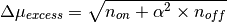

Estimate standard error on excess in the on region for an on-off observation.

TODO: Implement better error and limit estimates (Li & Ma, Rolke)!
| Parameters: | n_on : array_like
n_off : array_like
alpha : array_like
|
|---|---|
| Returns: | excess_error : ndarray
|
Examples
>>> excess_error(n_on=10, n_off=20, alpha=0.1)
3.1937438845342623...
>>> excess_error(n_on=4, n_off=9, alpha=0.5)
2.5